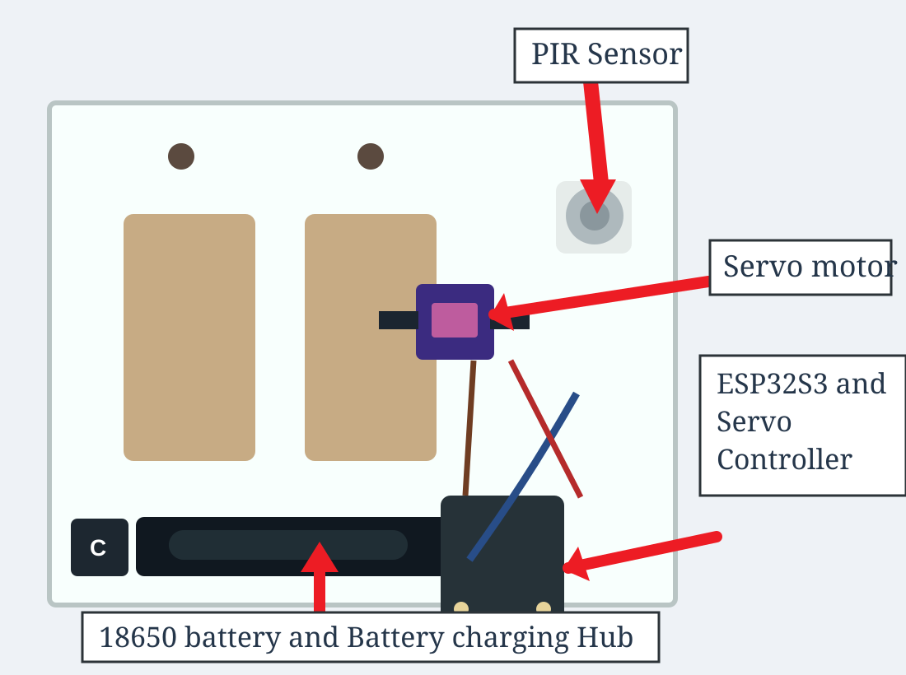
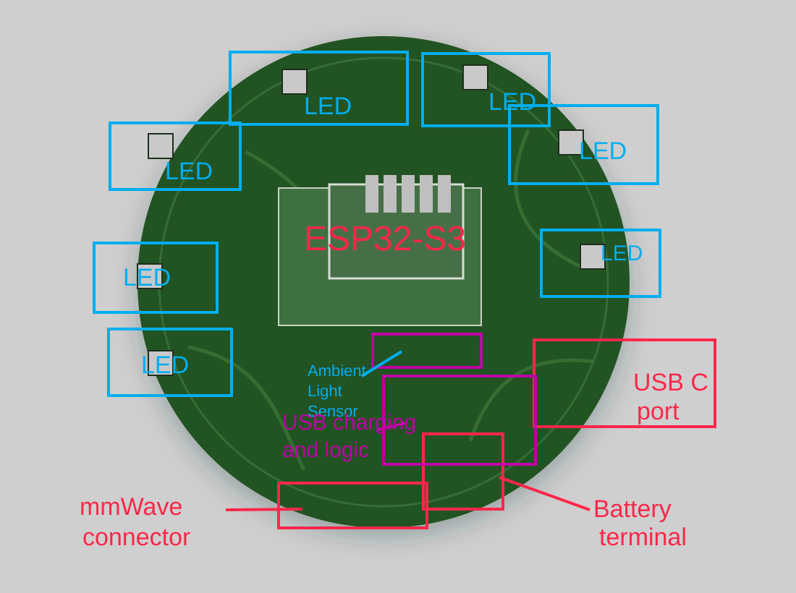

Switch Module
- Adafruit ESP32-S3 Feather
- PIR motion sensor on digital pin D12
- 8-channel Servo FeatherWing
- TowerPro SG92R-style servo actuation
- 3D-printed faceplate-mounted shell
Developer + Science Competition Brief
A Firebase-backed smart bathroom safety prototype with a Flutter app, CircuitPython hardware, PIR lighting automation, servo actuation, and an mmWave fall-detection research path.
BrightAssist is designed for independent living and bathroom safety. The working switch module turns lights on automatically and syncs state to Firebase. The research module studies 60 GHz mmWave radar for privacy-preserving fall detection.
Flutter app + Firebase + ESP32-S3 + PIR + Servo
System Architecture
Hardware Stack
Prototype Images


Software Design
devices/{deviceID}/isON
devices/{deviceID}/isAuto
devices/{deviceID}/ownerID
devices/{deviceID}/description
devices/{deviceID}/data
usersDevices/{uid}/devices/{deviceID}
Science Competition Experiment
44 of 45 motion trials were detected. The setup used fast, normal, and slow doorway events with a 0.5 second detection rule.
39 of 45 controlled fall simulations triggered an alert within 2.0 seconds using a ceiling-mounted radar test configuration.
The system target is fast caregiver notification through Wi-Fi, Firebase, and the connected app after a possible fall event.
Judging Rubric
Bathroom falls are high risk, and many existing systems are expensive, forgotten, or privacy-invasive.
A non-invasive switch module plus radar research module for privacy-preserving safety support.
Controlled trials measured detection accuracy across motion and simulated fall speeds.
Fall detection is based on motion patterns and needs more real-home testing before final claims.
Repository Guide
lib/main.dart
lib/home_page.dart
lib/device_page.dart
lib/register_device_page.dart
hardware code/code.py
hardware code/settings.toml.example
flutter pub get
flutter analyze
flutter test
Hardware secrets are loaded from `settings.toml`, so Wi-Fi and Firebase credentials do not need to be hardcoded in the script.